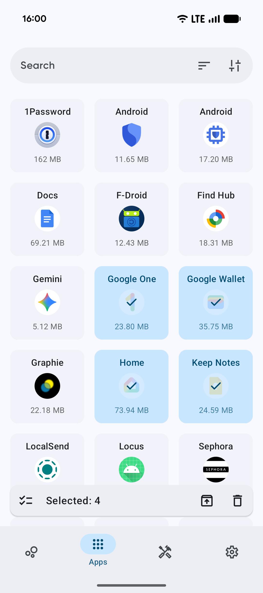
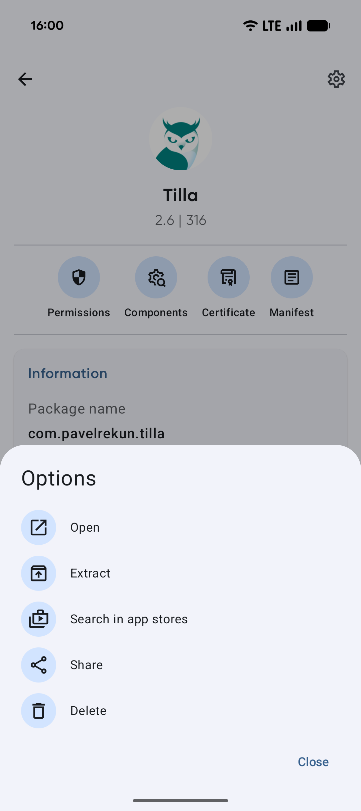
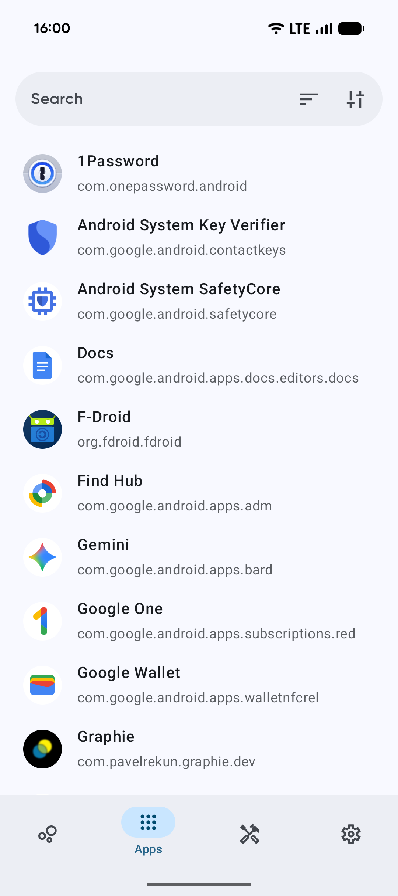

两年没清过的安卓老机，那天我决定跟预装应用算总账
一台用了两年的安卓手机，预装应用偷偷跑流量、占后台，删不掉又关不干净。朋友给我推了 Skit——一个能把所有应用看个底朝天的管理器，我花了一个周末把手机翻了个底。
去年双十一换了新手机，旧的那台 Pixel 5 就被我扔在抽屉里吃灰。上周整理东西时翻出来，充上电居然还能开——只是启动屏闪了三秒才亮，桌面滑起来卡得像在看 PPT。
我一直知道安卓老手机用久了会卡，也知道预装应用是重灾区，但「知道」和「亲眼看着它们在后台鬼混」是两回事。那天我决定，跟这台手机上的所有应用算一笔总账。
搜索了一圈，为什么大家都推 Skit
说出来不怕丢面子，我之前清理预装的手段是：进系统设置 → 应用管理 → 逐个禁用。问题是，系统设置里的应用列表只显示它想让你看的，那些藏在系统分区里的、没有图标但一直跑服务的家伙，设置里根本看不见。
百度搜了几次「安卓查看所有应用」，前几条不是广告就是论坛老帖。直到一个玩机群的朋友甩过来一句话：「你用 Skit 看过吗？能把手机里装的每一个 APK 都扒出来看。」
我抱着试试看的心态，去官网把安装包下了下来——体积不大，装完点开就是一个清爽的应用列表。第一眼看上去没什么特别的，跟我之前用过的几个管理器界面差不多。但当我点进右上角那个筛选按钮，勾选了「只看系统应用」的时候，我愣住了。
原来这台手机上装了 47 款系统应用。
系统设置里只给我看了 21 个。剩下那 26 个，包括一个叫 com.google.android.ext.services 的、一个 com.android.overlay 什么的，还有三四个我根本没听过厂商名字的包，全都藏在系统分区里，平时看不见摸不着，但它们的后台服务一直在跑。

一个下午，我把每一款应用的底都摸了
接下来三个小时我基本没挪窝。Skit 的详情页做得比我想象的细太多——点开任何一款应用，从基本信息、版本号、安装时间，到它声明了哪些权限、用到了哪些组件、证书是谁签的，全都列得清清楚楚。我甚至能看到每个包的体积和数据大小，哪些是真胖、哪些是装了没开过一眼的死应用，一览无余。
有几个细节让我印象挺深的。
第一是搜索框。我记不住应用名的时候就翻列表，但列表长了也累。后来发现顶部那个搜索栏支持按包名片段搜索——我只记得某个应用的包名里有 fb，搜一下直接命中。这个小设计省了我不少事，毕竟折腾党的包里总有几个不记得叫什么、只记得包名的工具。而且搜索状态会保持，切去别的页面再切回来，之前搜的词还在，不用重新输。这应该是后来版本修过的交互，我特意留意了一下——返回键现在是先收键盘再退出，逻辑很顺。
第二是 Material You 的动态取色。我换了一张蓝调的壁纸，Skits 的界面配色跟着就变了，按钮和强调色全往蓝调走。换暖色调的壁纸，界面又变暖。不用我手动选主题，它自动跟壁纸走。用惯了 iOS 的固定配色，这种「界面跟着心情变」的感觉还挺新鲜的。

删不掉的预装，原来不是 Skit 的问题
说到这里得提一个很多人会遇到的坑：冲着「清理系统应用」来，结果发现大部分预装还是删不掉。
我一开始也有点失望——点了几个我看着就烦的预装应用，卸载按钮灰着。后来翻了Skit文档才搞明白：这不是 Skit 不行，是安卓本身的安全模型。系统分区是受保护的，普通应用根本写不进去，没有 Root 权限就动不了。
那免 Root 能干嘛？其实挺多的。我可以查看全部信息——和用户应用一模一样的详情页，组件、权限、证书一个不少；可以提取安装包——把预装应用导出成 APK 存起来，万一哪天想装回来再装；可以标记和识别——哪些是系统自带的、哪些是后来装的，一眼分清。
真正想卸载或停用系统应用，官方文档说得很实在：要么 Root，要么用 ADB 侧的工具。Root 的风险它也列得明明白白——误删关键组件可能变砖，还会触发银行、支付类应用的完整性检测。对于我这种不是重度折腾党的用户来说，不值得为了删几个预装去冒这个险。
一套「驯服预装」的组合拳，我现在还在用
删不掉那就不删，但可以驯服。从下载到清理完，整个过程花了我大半个下午——先是把所有预装应用按体积和使用频率排了个序，然后给那些体积大但半年没打开过的应用全部提取了安装包存起来——以后想装随时能装，现在先让它们在后台别跑了。
具体怎么做的？对每一款应用，先提取 APK 留底，然后进系统设置「停用」它（部分系统支持），再禁掉它的后台联网。这套组合拳下来，预装应用还在系统里占着位置，但已经不跑了，既没删系统关键组件，又把它们的资源占用降到了最低。

整个周末下来，我清理了 32 个用户应用，提取了 26 个系统预装的安装包，把手机存储从 82% 降到了 54%。现在这台旧 Pixel 5 重新焕发生机，滑起来丝滑了不少——虽然不可能跟新手机比，但作为备用机完全够用。
写在最后
Skit 本身不是什么能一劳永逸解决所有问题的神器。它能帮你看清手机里装了什么、哪些在偷偷跑，但系统层面的安全限制是它绕不开的。不过对于像我这种想彻底了解自己手机、又不想 Root 冒险的普通用户来说，它已经把能做的都做到了极致。
说实话，如果当初搜索时直接就跳到了系统设置的「停用」按钮，我可能永远不会知道那 26 个藏在系统分区里的预装应用。清理不是目的，看清自己手里的东西才是。
这款工具本身是开源的，完整的源码放在 GitHub，也同步到了 Gitee 和 GitCode，国内网络环境下访问时选哪个方便就看自己习惯。文档站点还有更细的进阶玩法和版本更新记录，感兴趣的可以直接去翻。